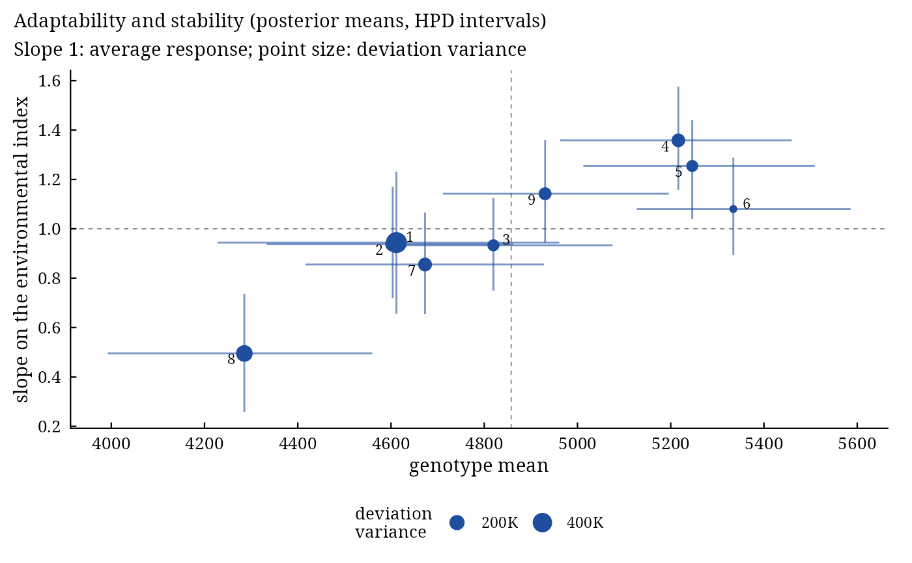

Bayesian stability analysis: Finlay-Wilkinson, Eberhart-Russell and Shukla models
Source:R/bayes_stability.R
bayes_stability.Rdbayes_stability() fits by Gibbs sampling the joint regression models of Finlay and Wilkinson (1963) and
Eberhart and Russell (1966), and the heterogeneous interaction variance model of Shukla (1972), to the plots of a
multi-environment trial. Every stability parameter (slope, deviation variance, stability variance, safety-first
index) then has a posterior distribution, so genotypes can be compared by probabilities rather than by
significance tests. The data may be unbalanced: plots or whole genotype-environment cells may be missing.
Usage
bayes_stability(
.data,
.y,
.gen,
.env,
.rep,
.model = c("ER", "FW", "Shukla"),
.nIter = 1000L,
.burnin = 0L,
.thin = 1L,
.chains = 1L,
.priors = bam_stab_priors(),
.level = 0.95,
.alpha = 0.05,
.seed = NULL,
.waic = TRUE
)Arguments
- .data
data frame with one row per plot.
- .y, .gen, .env, .rep
columns of the response, genotype, environment and replicate (bare names or strings).
- .model
"ER"(default),"FW"or"Shukla"; see Details.- .nIter
number of iterations kept per chain before thinning (default 1000).
- .burnin
number of iterations discarded at the start of every chain (default 0).
- .thin
keep every
.thin-th iteration (default 1).- .chains
number of chains (default 1); the first starts at the least-squares estimates, the others at dispersed values.
- .priors
priors from
bam_stab_priors().- .level
probability of the highest posterior density intervals (default 0.95).
- .alpha
probability of the safety-first index (default 0.05, as in Eskridge 1990).
- .seed
seed of the random numbers (the random number state of the session is restored afterwards).
- .waic
compute WAIC during sampling (default
TRUE).
Value
An object of class c("bam_bayes_stability", "bam_result", "list"):
stabilitydata.table, one row per genotype:Gen;mean,mean_lower,mean_upper;slope,slope_lower,slope_upper,prob_slope_above_1;dev_var,dev_var_lower,dev_var_upper;R2;safety_first,safety_first_lower,safety_first_upper,prob_best_safety.environmentsdata.table:Env, posterior mean and HPD interval of the environmental index \(h_j\), and the observed environment mean.summarydata.tableof every parameter (mu,sigma2,g[i],h[j],slope[i],sigma2_d[i]): posterior mean, sd, Monte Carlo error, HPD interval, effective sample size, potential scale reduction factor.drawscoda::mcmc.listof these parameters.deviationsarray (draws x genotypes x environments) of the deviations \(d_{ij}\).
diagnosticsGelman-Rubin, Raftery-Lewis and Heidelberger-Welch diagnostics of the overall mean, error variance, slopes and deviation variances.
fitDIC and WAIC, as in
bayes_ammi().lsleast-squares estimates (the start of the first chain).
settingsiterations, burn-in, thinning, chains, model, priors, level, alpha, seed, time used.
Methods: print(), plot(x, which = c("slopes", "lines", "deviations", "trace", "density")),
bam_interpret(), bam_cite().
Details
For genotype \(i\), environment \(j\) and plot \(l\), $$y_{ijl} = \mu + g_i + (1 + b_i)h_j + d_{ij} + e_{ijl}, \qquad d_{ij} \sim N(0, \sigma^2_{d,i}), \quad e_{ijl} \sim N(0, \sigma^2),$$ with \(\sum_i g_i = \sum_j h_j = \sum_i b_i = 0\). The environment effects \(h_j\) are the environmental index, estimated jointly with the other parameters as in the Bayesian Finlay-Wilkinson regression of Lian and de los Campos (2016) instead of being fixed at the environment means; the slope of genotype \(i\) is \(1 + b_i\), with average 1.
"ER"Eberhart-Russell: slopes and a deviation variance \(\sigma^2_{d,i}\) for every genotype (the Bayesian version of Oliveira et al. 2018). A stable genotype has a slope near 1 and a small deviation variance.
"FW"Finlay-Wilkinson: slopes and one deviation variance for all genotypes.
"Shukla"no slopes (\(b_i = 0\)) and an interaction variance \(\sigma^2_{d,i}\) for every genotype: Shukla's stability variance, as in the Bayesian heterogeneous variance model of Edwards and Jannink (2006).
The sampler draws the overall mean, the genotype effects, the environmental index and the slopes from their
normal conditional distributions with the deviations \(d_{ij}\) integrated out (each observed cell mean
then has variance \(\sigma^2_{d,i} + \sigma^2/n_{ij}\)); then the deviations;
then the variances from their scaled inverse chi-squared conditionals. This partially collapsed Gibbs sampler
mixes well even when the deviations are large. Empty cells contribute no data; their deviations are drawn from the
prior, and bam_predict() predicts them.
stability reports, for every genotype, the posterior mean and HPD interval of its mean
\(\mu + g_i\), slope, deviation variance and the share of its variance across environments explained by
the regression,
\(R^2_i = (1 + b_i)^2 s^2_h / ((1 + b_i)^2 s^2_h + \sigma^2_{d,i})\) with \(s^2_h\) the variance of the environmental index; the posterior probability
that the slope exceeds 1; and the safety-first index of Eskridge (1990),
\(\mu + g_i - z_{1-\alpha}\sqrt{V_i}\), with \(V_i = b_i^2 s^2_h(1 - 1/E) +
\sigma^2_{d,i}\) (Eberhart-Russell), \(b_i^2 s^2_h(1 - 1/E)\) (Finlay-Wilkinson) or \(s^2_h + \sigma^2_{d,i}\) (Shukla). When smaller
values are better (higher_better = FALSE in bam_interpret() and the decision functions), the
index is read the other way: \(\mu + g_i + z_{1-\alpha}\sqrt{V_i}\), smaller better.
The result works with bam_predict(), bam_winners(), bam_superiority(),
bam_ranks(), bam_indices(), bam_compare() and
bam_ppc(), which use the draws of the cell means \(\mu + g_i + (1 + b_i)h_j + d_{ij}\).
References
Finlay, K. W. and Wilkinson, G. N. (1963). The analysis of adaptation in a plant-breeding programme. Australian Journal of Agricultural Research, 14(6), 742–754. doi:10.1071/AR9630742
Eberhart, S. A. and Russell, W. A. (1966). Stability parameters for comparing varieties. Crop Science, 6(1), 36–40. doi:10.2135/cropsci1966.0011183X000600010011x
Shukla, G. K. (1972). Some statistical aspects of partitioning genotype-environmental components of variability. Heredity, 29(2), 237–245. doi:10.1038/hdy.1972.87
Eskridge, K. M. (1990). Selection of stable cultivars using a safety-first rule. Crop Science, 30, 369–374.
Edwards, J. W. and Jannink, J.-L. (2006). Bayesian modeling of heterogeneous error and genotype x environment interaction variances. Crop Science, 46(2), 820. doi:10.2135/cropsci2005.0164
Lian, L. and de los Campos, G. (2016). FW: an R package for Finlay-Wilkinson regression that incorporates genomic/pedigree information and covariance structures between environments. G3: Genes, Genomes, Genetics, 6(3), 589–597. doi:10.1534/g3.115.026328
Oliveira, T. R. A., Carvalho, H. W. L., Nascimento, M., Costa, E. F. N., Amaral Junior, A. T., Gravina, G. A. and Carvalho Filho, J. L. S. (2018). The Eberhart and Russell's Bayesian method used as an instrument to select maize hybrids. Euphytica, 214, 64. doi:10.1007/s10681-018-2146-y
See also
bam_stab_priors, bam_indices, bayes_ammi
Other stability:
bam_ammi_indices(),
bam_indices(),
bam_stab_priors()
Author
Muhammad Yaseen (myaseen208@gmail.com)
Examples
data(Maiz)
fs <-
bayes_stability(
.data = Maiz
, .y = y
, .gen = entry
, .env = site
, .rep = rep
, .model = "ER"
, .nIter = 1000
, .burnin = 200
, .thin = 1
, .chains = 1
, .priors = bam_stab_priors(
mu_var = NULL
, g_var = NULL
, h_var = NULL
, b_var = 100
, nu = 1
, s2 = NULL
, nu_d = 1
, s2_d = NULL
)
, .level = 0.95
, .alpha = 0.05
, .seed = 1
, .waic = TRUE
)
fs
#> Bayesian Eberhart-Russell stability model: 9 genotypes, 20 environments, 4 replicates
#> 1 chain(s) x 1000 kept draws (iterations 1000 after a burn-in of 200, thinning 1); 0.3 s
#>
#> Genotypes: posterior means and 95% HPD intervals; safety-first index at alpha = 0.05
#> Gen mean mean_lower mean_upper slope slope_lower slope_upper
#> <char> <num> <num> <num> <num> <num> <num>
#> 1: 1 4612 4228 4961 0.9442 0.6555 1.2310
#> 2: 2 4604 4333 4862 0.9375 0.7197 1.1700
#> 3: 3 4820 4607 5075 0.9331 0.7489 1.1250
#> 4: 4 5216 4963 5459 1.3580 1.1580 1.5750
#> 5: 5 5246 5012 5509 1.2540 1.0400 1.4400
#> 6: 6 5334 5127 5586 1.0800 0.8943 1.2880
#> 7: 7 4673 4416 4928 0.8553 0.6547 1.0660
#> 8: 8 4285 3992 4560 0.4952 0.2577 0.7368
#> 9: 9 4930 4711 5196 1.1420 0.9448 1.3600
#> prob_slope_above_1 dev_var dev_var_lower dev_var_upper R2 safety_first
#> <num> <num> <num> <num> <num> <num>
#> 1: 0.361 494300 34290 1010000 0.7278 3460
#> 2: 0.284 190500 11210 430600 0.8712 3884
#> 3: 0.234 111700 11650 291800 0.9190 4258
#> 4: 0.998 150900 14110 416600 0.9466 4280
#> 5: 0.995 110900 10230 278100 0.9533 4511
#> 6: 0.800 70210 10660 178500 0.9594 4859
#> 7: 0.089 156400 9309 359600 0.8731 3969
#> 8: 0.000 257600 37010 594100 0.5976 3008
#> 9: 0.916 131500 13510 346400 0.9347 4280
#> safety_first_lower safety_first_upper prob_best_safety
#> <num> <num> <num>
#> 1: 2757 4228 0.000
#> 2: 3358 4412 0.000
#> 3: 3782 4648 0.003
#> 4: 3812 4739 0.013
#> 5: 4054 4919 0.108
#> 6: 4499 5225 0.856
#> 7: 3498 4447 0.001
#> 8: 2485 3583 0.000
#> 9: 3738 4691 0.019
#>
#> Overall mean 4858, error variance 760500; largest potential scale reduction factor (one chain)
#> All parameters: x$summary; environmental index: x$environments
#>
#> Sources: Eberhart and Russell (1966); Oliveira et al. (2018); Lian and de los
#> Campos (2016); Eskridge (1990); Spiegelhalter et al. (2002); Watanabe (2010).
#> Full references: bam_cite(x).
plot(x = fs, which = "slopes")
#> `height` was translated to `width`.
